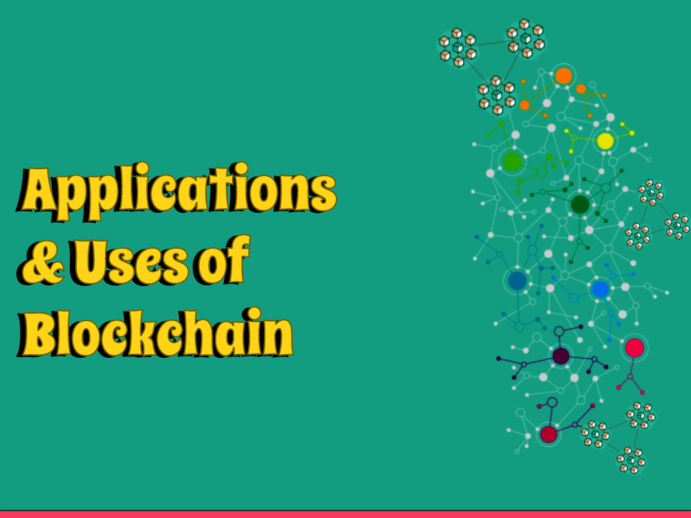

Lately, Blockchain Innovation has arisen as one of the most encouraging and progressive advances within recent memory. Initially planned as the basic innovation for digital currencies like Bitcoin, blockchain has since developed to turn into a flexible instrument that can be applied to a great many businesses and use cases. In this blog entry, we will investigate the different applications and utilizations of blockchain innovation and the way things are changing various areas.
Financial Services
One of the most famous and notable uses of blockchain innovation is in the monetary administrations industry. Blockchain innovation empowers secure and straightforward distributed exchanges without the requirement for go-betweens like banks or installment processors. This innovation can likewise be utilized for settlements, micropayments, and other monetary administrations. Blockchain-based arrangements like stablecoins, advanced wallets, and brilliant agreements are now upsetting customary monetary frameworks and empowering monetary consideration for the unbanked and underbanked.
Supply Chain Management
Another industry that can profit from the utilization of blockchain innovation is inventory network the board. The decentralized and changeless nature of blockchain can give start to finish perceivability and straightforwardness across the inventory network, from unrefined substance obtaining to definite conveyance. This can assist with diminishing misrepresentation, increment proficiency, and further develop discernibility, which is particularly significant for ventures like food and drugs.
Healthcare
The medical care industry is likewise ready for interruption using blockchain innovation. With blockchain, medical care information can be safely and proficiently put away, made due, and divided among patients, medical services suppliers, and scientists. This can assist with working on tolerant results, lessen costs, and empower new medicines and treatments. Blockchain can likewise be utilized to deal with the store network of drugs and clinical gadgets, guaranteeing their genuineness and security.
Identity Management
Character the board is another region where blockchain innovation can be applied. With blockchain, people can have more prominent command over their own information and character, while likewise guaranteeing the security and protection of their data. Blockchain-based personality arrangements can be utilized for online check, secure access control, and advanced character the executives. This can assist with lessening wholesale fraud and extortion, while additionally empowering more prominent protection and independence for clients.
Voting Systems
Blockchain innovation can likewise be utilized to work on the security, straightforwardness, and precision of casting a ballot frameworks. With blockchain, votes can be safely and namelessly cast and counted, killing the requirement for delegates and diminishing the gamble of altering or misrepresentation. Blockchain-based casting a ballot frameworks can likewise be utilized for intermediary casting a ballot, investor casting a ballot, and different types of corporate administration.
Blockchain Use Cases in Monetary Services
Payments and Remittances
One of the most famous use instances of blockchain in monetary administrations is installments and settlements. Blockchain innovation considers quick, secure, and practical cross-line installments, with exchanges getting comfortable minutes rather than days. By utilizing blockchain, monetary organizations can kill middle people, diminish expenses, and speed up and effectiveness of exchanges.
Digital Character Verification
Character confirmation is a basic cycle in monetary administrations, particularly in regions, for example, onboarding new clients and forestalling extortion. Blockchain innovation can assist with smoothing out this interaction by giving a solid, decentralized stage for checking personalities. By utilizing blockchain, monetary establishments can decrease the gamble of data fraud and extortion, and guarantee that client data is kept hidden and secure.
Trade Finance
Blockchain innovation can likewise be utilized in exchange money to robotize and smooth out cycles, for example, letters of credit, receipt supporting, and store network finance. By utilizing blockchain, monetary establishments can diminish the time and cost related with these cycles, as well as increment the straightforwardness and security of exchange exchanges.
Securities Settlement
Blockchain innovation can likewise be utilized to work on the effectiveness and speed of protections settlement. By utilizing blockchain, monetary foundations can decrease repayment times from days to minutes, kill the requirement for mediators, and increment the straightforwardness and security of protections exchanges.
Insurance
Blockchain innovation can likewise be utilized in the protection business to robotize and smooth out cycles, for example, claims handling and misrepresentation recognition. By utilizing blockchain, guarantors can decrease the time and cost related with these cycles, as well as increment the straightforwardness and exactness of protection exchanges.
Benefits of Blockchain in Monetary Services
The utilization of blockchain in monetary administrations brings various advantages, including:
Cost Reduction
By disposing of mediators and computerizing processes, monetary foundations can altogether decrease costs.
Increased Efficiency
Blockchain innovation takes into consideration quicker, more proficient exchanges, diminishing settlement times and speeding up business tasks.
Improved Security
Blockchain innovation gives a safe, decentralized stage for putting away and overseeing information, lessening the gamble of misrepresentation and digital assaults.
Greater Transparency
Blockchain innovation gives a straightforward, auditable rnecord of exchanges, expanding the trust and responsibility of monetary foundations.
Conclusion
As we have seen, blockchain innovation has a large number of utilizations and utilizations across various enterprises and areas. From money and inventory network the board to medical care and character the executives, blockchain is changing the manner in which we store, make due, and share data. As this innovation keeps on developing, we can hope to see significantly more creative applications and utilize cases arise, opening the maximum capacity of blockchain and introducing another period of decentralized and trustless frameworks.
Blockchain Use Cases in Store network Management
The inventory network is one of the ventures that have been disturbed by blockchain innovation. The innovation can possibly give straightforwardness, security, and productivity in the administration of the store network. Here are a portion of the ways that blockchain innovation can be utilized in store network the executives:
Traceability and Transparency
Perhaps of the greatest test in store network the executives is the absence of straightforwardness and recognizability. Blockchain innovation can assist with taking care of this issue by giving a straightforward and secure record of all exchanges in the production network. This will empower organizations to follow the development of labor and products from the starting place to the mark of utilization.
Efficient Inventory network Management
Blockchain innovation can assist with smoothing out the inventory network by decreasing how much administrative work and manual cycles included. It can robotize different cycles like the following of merchandise, checking the legitimacy of items, and overseeing stock. This will diminish the time and cost engaged with dealing with the production network.
Reduction in Duplicating and Fraud
Blockchain innovation can assist with decreasing forging and misrepresentation in the store network. It can give a safe and straightforward record, everything being equal, making it hard for fraudsters to change the records. This will guarantee that all items in the production network are legitimate and of superior grade.
Improved Client Experience
Blockchain innovation can assist with further developing the client experience by giving continuous perceivability into the store network. This will empower clients to follow their orders and know precisely when they will be conveyed. It will likewise furnish them with data about the legitimacy and nature of the items they are buying.
Conclusion
Blockchain innovation can possibly change the manner in which supply chains are made due. It can give straightforwardness, security, and effectiveness in the administration of the store network. By utilizing blockchain innovation, organizations can further develop their store network the board processes, diminish the gamble of misrepresentation, and give a better client experience. As additional organizations embrace blockchain innovation, we can hope to see a huge improvement in the administration of supply chains across different ventures.
Blockchain Use Cases in Healthcare
Blockchain innovation has turned into a unique advantage in different businesses, and medical services is no special case. It can possibly upset the manner in which medical services suppliers convey patient consideration, oversee clinical records, and smooth out activities. In this blog entry, we'll investigate the utilization instance of blockchain innovation in medical care and how it can change the business.
Medical Record Management
One of the main advantages of blockchain innovation in medical services is its capacity to oversee clinical records. With blockchain, patient records can be put away safely and gotten to by approved people continuously. This can dispose of the requirement for paper records, which can be lost or harmed, and decrease the gamble of information breaks.
Blockchain innovation can likewise guarantee that clinical records are precise and state-of-the-art, decreasing the gamble of blunders in understanding consideration. The utilization of shrewd agreements can empower patients to control who can get to their clinical records and how they are utilized.
Clinical Preliminaries and Research
Blockchain innovation can likewise change how clinical preliminaries are directed and research is done in medical care. By utilizing blockchain, clinical preliminary information can be put away safely and divided among various gatherings progressively. This can accelerate the clinical preliminary interaction and guarantee that information is precise and dependable.
The utilization of blockchain innovation can likewise assist with resolving the issue of information protection and security in clinical preliminaries. It can give a safe and straightforward stage for specialists to gather and share information, it is safeguarded to guarantee that patient security.
Drug Inventory network Management
The medication inventory network is an intricate interaction that includes different gatherings, including makers, wholesalers, and drug stores. Blockchain innovation can work on the straightforwardness and detectability of the medication store network, making it simpler to recognize the beginning of medications and track their excursion from producer to patient.
By utilizing blockchain, drug makers can guarantee that their items are certified and have not been altered. This can assist with decreasing the gamble of fake medications entering the market and guarantee that patients get protected and compelling meds.
Telemedicine
Telemedicine has become progressively well known as of late, particularly in far off regions where admittance to medical care administrations is restricted. Blockchain innovation can improve the security and protection of telemedicine by giving a solid stage to patients and medical services suppliers to convey and share information.
By utilizing blockchain, patients have some control over who can get to their clinical data and guarantee that their information is secure. This can assist with building trust among patients and medical services suppliers, working on the nature of care conveyed.
Health Insurance
Blockchain innovation can likewise change how health care coverage is overseen and conveyed. By utilizing blockchain, wellbeing guarantors can decrease managerial expenses and work on the precision of cases handling.
Blockchain innovation can likewise empower patients to control their wellbeing information and offer it with their back up plans in a safe and straightforward way. This can assist with lessening the gamble of protection extortion and guarantee that patients get the suitable degree of care.
Conclusion
Blockchain innovation can possibly change the medical services industry by working on the security, protection, and straightforwardness of patient information. It can likewise upgrade the proficiency of medical services tasks and lessen regulatory expenses. The utilization instance of blockchain innovation in medical care is still in its beginning phases, however its true capacity is irrefutable. It will be invigorating to perceive how this innovation will proceed to develop and shape the eventual fate of medical care.
Blockchain Use Cases in Personality Management
In the present computerized age, personality the executives has turned into a critical test. With the ascent of online exchanges and computerized communications, it has become more significant than any time in recent memory to shield individuals' personalities from burglary, misrepresentation, and other vindictive exercises. Blockchain innovation offers an extraordinary answer for this issue by giving a protected and decentralized framework for overseeing personalities.
One of the main advantages of utilizing blockchain for character the board is the disposal of an incorporated power. Rather than depending on a solitary element to oversee personalities, blockchain innovation considers a decentralized organization of hubs to keep up with the records. This makes a safer framework as there is no weak link or weakness.
There are numerous potential use cases for blockchain character the executives, including:
Financial Services
In the monetary business, character the board is basic for forestalling extortion and illegal tax avoidance. By utilizing blockchain innovation for character check, monetary foundations can guarantee that main approved people approach records and exchanges.
Healthcare
In the medical services industry, personality the executives is fundamental for guaranteeing patient security and safeguarding against clinical fraud. By utilizing blockchain innovation, medical services suppliers can safely store patient records and guarantee that main approved people approach them.
Government
State run administrations can utilize blockchain innovation for character the board to safely store and oversee resident records. This can assist with forestalling electoral misrepresentation, data fraud, and different sorts of crime.
Education
Blockchain innovation can be utilized to make secure advanced accreditations, for example, certificates and records, which can be confirmed and shared effectively with managers and instructive organizations.
Conclusion
Character the executives is basic in the present computerized age, and blockchain innovation gives a novel answer for this test. By utilizing blockchain for personality the executives, people and associations can have more noteworthy command over their information, and the gamble of information breaks and wholesale fraud can be fundamentally diminished. With the possibility to reform numerous ventures, obviously blockchain personality the executives is a utilization case with critical potential.
Blockchain Use Cases in Casting a ballot Systems
Casting a ballot is a crucial cycle in any just society. It guarantees that the desire of individuals is addressed and that choices are made to the greatest advantage of society overall. Nonetheless, customary democratic frameworks have a few downsides, like absence of straightforwardness, weakness to misrepresentation, and shortcoming. Blockchain innovation might possibly tackle these issues and alter the manner in which we direct races. In this article, we'll investigate the utilization instance of blockchain in casting a ballot frameworks.
The Issues with Customary Democratic Systems
Customary democratic frameworks are unified, and that implies that all information is put away in a solitary area. This makes them powerless against misrepresentation, hacking, and control. Moreover, the absence of straightforwardness in the democratic cycle makes it challenging to check the outcomes. There have been various cases of casting a ballot inconsistencies and debates, which have prompted broad doubt in the majority rule process.
Blockchain Innovation in Casting a ballot Systems
Blockchain innovation offers a decentralized, straightforward, and secure answer for casting a ballot frameworks. By utilizing blockchain, we can make a carefully designed and permanent record of all votes cast. This implies that once a vote is recorded on the blockchain, it can't be changed or erased. The straightforwardness of the blockchain likewise guarantees that all members can confirm the outcomes, which increments trust simultaneously.
Smart Agreements in Casting a ballot Systems
Brilliant agreements are self-executing contracts with the provisions of the arrangement between the gatherings straightforwardly composed into lines of code. Shrewd agreements can be utilized in casting a ballot frameworks to mechanize the cycle and guarantee that the principles are followed. For instance, a shrewd agreement could be utilized to make sure that an elector is qualified to cast a ballot, that they have not previously casted a ballot, and that their vote is projected accurately. Savvy agreements can likewise be utilized to mechanize the counting of votes, which diminishes the gamble of blunders and control.
Benefits of Blockchain in Casting a ballot Systems
There are a few advantages of utilizing blockchain in casting a ballot frameworks. Right off the bat, blockchain innovation can work on the security and respectability of the democratic interaction by guaranteeing that votes are sealed and unchanging. Furthermore, blockchain can increment straightforwardness in the democratic cycle, which increments trust in the outcomes. At long last, blockchain can computerize the democratic cycle and lessen the gamble of mistakes and control.
Challenges of Blockchain in Casting a ballot Systems
While blockchain innovation offers a few advantages for casting a ballot frameworks, there are likewise a few provokes that should be tended to. Right off the bat, blockchain innovation is still moderately new, and there is an absence of understanding among the overall population. Besides, the execution of blockchain innovation in casting a ballot frameworks requires critical assets and skill. At long last, there are worries around security and obscurity in the democratic cycle, which should be tended to.
Conclusion
Blockchain innovation can possibly alter the manner in which we direct decisions. By utilizing blockchain, we can make a carefully designed and straightforward record of all votes cast, which increments trust simultaneously. Savvy agreements can likewise be utilized to computerize the interaction and guarantee that the principles are followed. While there are a few provokes that should be tended to, the advantages of utilizing blockchain in casting a ballot frameworks are clear. It's the ideal opportunity for us to embrace this innovation and use it to work on the majority rule process.
Generally speaking, blockchain innovation gives a promising answer for the difficulties looked by customary democratic frameworks. With the capacity to give a protected and straightforward democratic cycle, it can possibly reestablish trust in majority rule government and guarantee that the desire of individuals is addressed. As the innovation keeps on advancing, pondering the opportunities for the fate of voting is energizing.